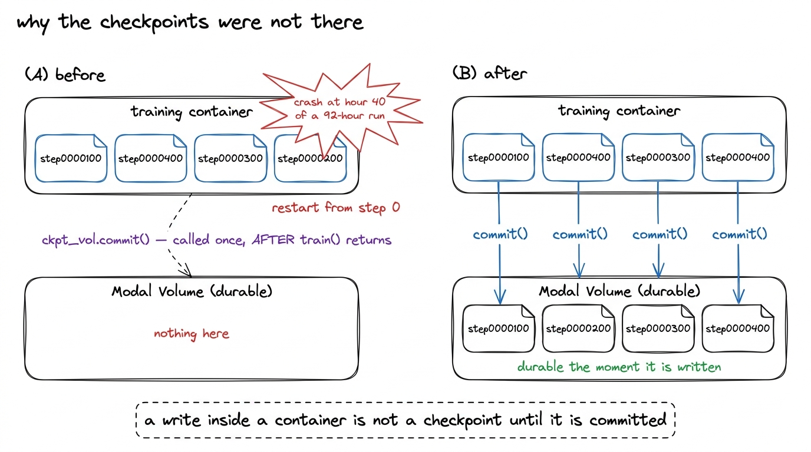
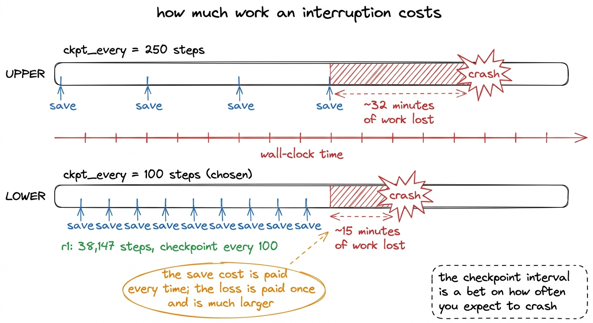
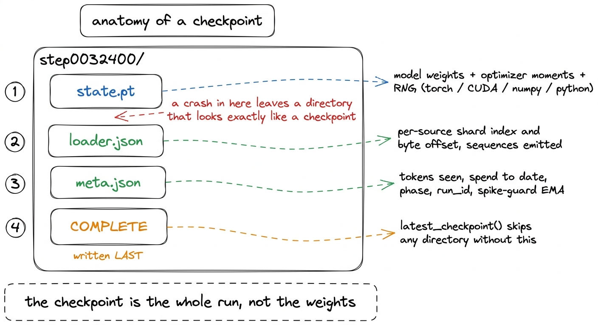
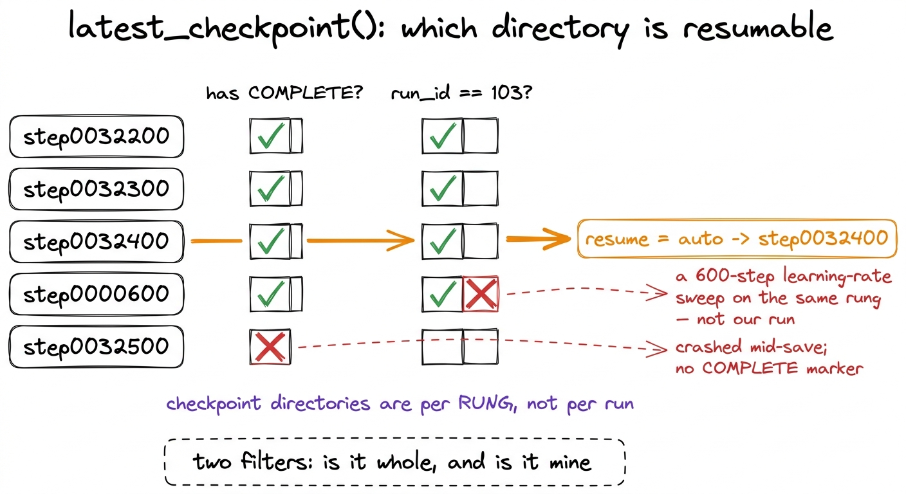
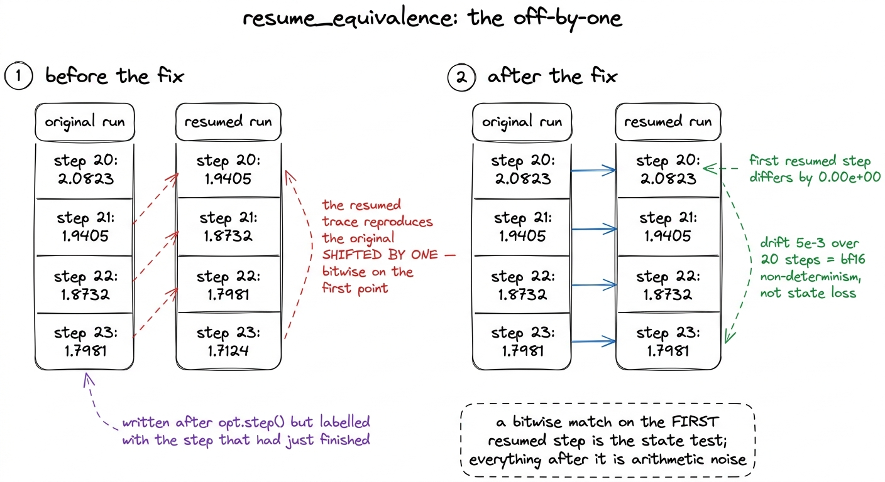
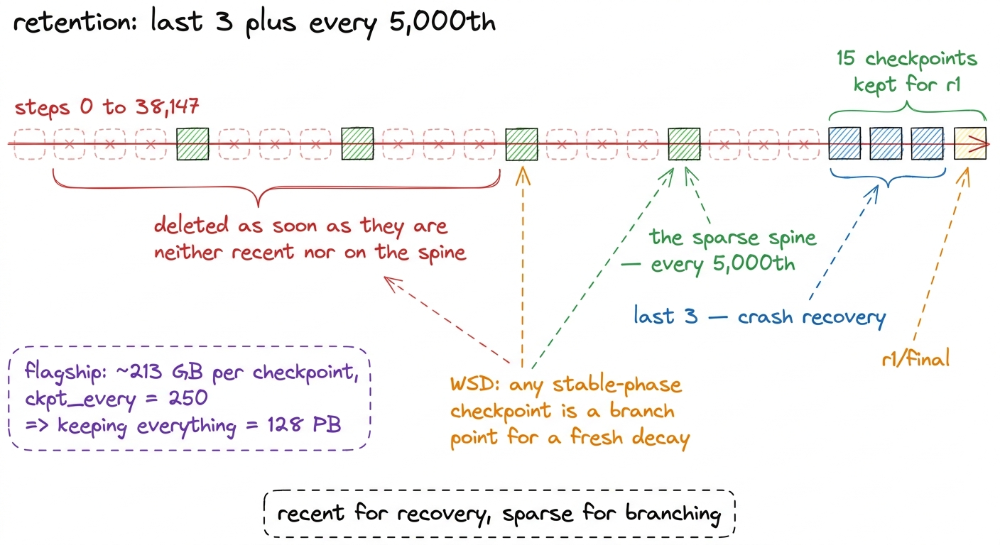
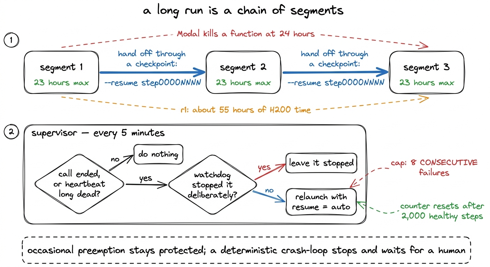

Checkpointing that survives losing the GPU
A checkpoint is the whole run, not the weights: optimizer moments, dataloader cursor, RNG, the spike-guard EMA. Proven by resuming twice and comparing the losses bitwise.
r1 took 38,147 steps and about 55 hours of a single H200 to finish, which is what $252.35 buys at $4.54 an hour. Over a window that long, on rented hardware, the run has to survive things unrelated to the model: a preempted container, a node fault, an out-of-memory kill from a neighbour, and a platform that terminates any function at 24 hours. The design question is not whether a long run gets interrupted. It is what an interruption costs.
When we looked, the answer was: everything.
The hole
Checkpoints were being written to a Modal Volume, a durable filesystem shared between containers. A Volume persists what a container wrote on commit. Until commit() is called the writes exist only in that container's view of the mount, and when the container dies the view dies with it.
ckpt_vol.commit() was called exactly once, after train() returned.
That single placement makes every checkpoint conditional on the run ending normally, which is the one case in which checkpoints are not needed. A crash at hour 40 of a 92-hour run would have lost all of it and restarted from step 0. Nothing in the code looks wrong on inspection: the saves happen, the files appear, the directory listing inside the container is correct. The evidence was on the volume rather than in the code, and the volume held nothing for the run that was supposedly writing to it.

figure rendering · The commit placement that made every checkpoint conditional on the runThe fix is one line moved, and the rest of this chapter is about the other things that had to be true before moving it was worth anything.
Commit on every save, and save more often
The first change is the one in the figure: commit_fn is called immediately after each save returns, so a checkpoint is durable when it is written rather than when the job ends.
The second change is the interval. Checkpoints were taken every 250 steps; they are now taken every 100. The interval is the size of the window lost when the process dies, so at 250 steps roughly 32 minutes of training is at risk at any moment, and at 100 steps roughly 15. The cost is that the save runs 2.5 times as often, and a save blocks the loop for as long as it takes to write weights and optimizer state to a network filesystem.1 That has a consequence for monitoring rather than for training: the heartbeat goes quiet for the duration, and r1's final save was long enough to trip a stall gate tuned for a healthy step cadence. The loop now reports status: "checkpointing" before it starts writing, so the watchdog and the supervisor can apply a longer, save-specific grace.

figure rendering · The checkpoint interval sets the size of the window an interruption deA checkpoint is the whole run
Saving model weights is the part everyone does, and on its own it does not continue a run. The gap between "the weights are safe" and "the run can continue" is where most of the damage here lives:
| what | why it is training state |
|---|---|
| model weights | the obvious part |
| optimizer moments | AdamW's first and second moments; without them the resumed steps are a fresh optimizer warming up |
| dataloader cursor | per-source shard index and byte offset, so the run does not re-read tokens it has seen |
| RNG — torch, CUDA, numpy, python | dropout masks and the loader's source draws must continue the same sequence |
| spike-guard EMA | the baseline the spike detector compares against |
| tokens seen | the budget the run is priced on |
| spend to date | the budget cap |
The save writes three files and then a marker, in that order:
torch.save({"model": model.state_dict(), "optimizer": opt.state_dict(),
"step": step,
"rng": {"torch": torch.get_rng_state(),
"cuda": (torch.cuda.get_rng_state_all()
if torch.cuda.is_available() else None),
"numpy": np.random.get_state(),
"python": random.getstate()}},
path / "state.pt")
(path / "loader.json").write_text(json.dumps(loader.state_dict(), default=str))
(path / "meta.json").write_text(json.dumps({**meta, "step": step}, indent=2))
(path / COMPLETE).write_text("ok")
figure rendering · What a save writes, in the order it writes it. The marker goes down onTwo of these were missing at first, and neither absence produces an error.
The spike-guard EMA. The training loop carries a guard that compares each step's loss against an exponential moving average and skips the optimizer step when the loss exceeds it by a set ratio.2 The guard also skips on NaN or Inf and aborts after a number of consecutive skips. It is described in full in the chapter on the training loop; here only its state matters. That EMA is training state. A resume that restarts it at None disables spike detection for the guard's warmup window, then re-derives a baseline from whatever the loss happens to be at that moment. The run resumes with its safety system switched off, at exactly the point after a crash when it is most likely to be needed, and nothing reports that this has happened. The guard's state is carried in meta.json and reloaded with the rest:
def state_dict(self) -> dict:
return {"ema": self.ema, "consecutive": self.consecutive,
"total_skipped": self.total_skipped, "events": self.events[-50:]}Tokens seen and spend to date. Starting these at zero on a resume makes a restarted run report a fraction of the tokens it actually showed the model, which corrupts the number the project is priced on. It also resets accumulated spend, so the budget cap can never fire on a run that has been restarted even once. The cap was unenforceable on precisely the long runs it exists to protect, which is the shape of this whole class of bug: the safety mechanism is disabled by the event it was built for.
The COMPLETE marker
A save is not atomic. A crash partway through writing leaves a directory containing some of the files, with plausible names and sizes, and nothing about it says it is torn. Resuming from half-written weights turns one lost hour into a lost run, quietly, because the loss curve after a bad load looks like a spike rather than like a corrupted load.
The marker file is therefore written last, after every other byte is on disk, and the loader refuses anything without it:
if not (path / COMPLETE).exists():
raise RuntimeError(
f"{path} has no {COMPLETE} marker — it is a torn checkpoint from an "
"interrupted save. Resume from the previous one instead of training "
"on half-written weights.")latest_checkpoint() applies the same filter when it scans, so a torn directory is invisible to auto-resume rather than rejected on load.
There is a second filter beside it, because checkpoint directories are organised per rung, not per run. Every experiment ever conducted on r1 leaves its files in the same place: the learning-rate sweep from the training-loop chapter ran four rates for 600 steps each, and its checkpoints sit alongside the real run's. Neither the directory name nor the recorded step orders the two correctly, because they used different batch sizes, so both obvious heuristics pick the sweep. A relaunch would then have resumed the real pretraining run from an unrelated experiment, and the only visible symptom would have been one jump in the loss, which reads as a spike.3 The same failure had a second form: r1's directory also held a final from a 40-step smoke test, and an earlier version of the ranking treated any directory named final as infinitely recent. A relaunch of a run hundreds of steps in would have adopted the smoke test and continued from it happily.
Checkpoints therefore record the run that wrote them, and auto-resume considers only its own. r1's run id is 103.

figure rendering · Auto-resume rejects torn checkpoints and checkpoints belonging to otheEvery launcher passes resume="auto", which resolves to the newest complete checkpoint belonging to the run. That is what makes a restart idempotent: relaunching the same command continues the run rather than silently starting a second one from step 0. r1 fits on one H200 and was never sharded, so for our run a single process resolves the path and uses it. On the larger models, which needed FSDP2 across two B300s, rank 0 resolves the path and broadcasts it, because ranks that resolve independently can land on different checkpoints.
Proving that a resume is the same run
All of the above is a design. It does not answer whether a resumed run continues the same run or merely a similar one, and that distinction is invisible in a loss curve: a run that lost its optimizer moments, its data cursor or its RNG produces a curve that looks like training with a little more noise in it.
resume_equivalence answers it directly. It trains a short run, recording the loss at every step, then rebuilds from the checkpoint at a chosen cut point and trains forward again over the same steps. If the resume is correct, the second pass reproduces the first pass's losses from the cut onward. The test is strong because it fails if any piece of state was not restored — weights, optimizer moments, the dataloader position, RNG, the position in the learning-rate schedule, the spike guard's EMA, or the router's rule-updated bias from the previous chapter.
It found a real bug, and not in any of the things it was built to check.
The checkpoint was written after opt.step(), so the state it holds is the state after that step completed. It was labelled with the index of the step that had just run, and those two differ by one. A resume therefore re-executed a step the checkpoint had already applied, and the resumed trace reproduced the original shifted by one position, bitwise identical on the first compared point. The weights were right and the data cursor was right; the step counter was wrong, so the learning-rate schedule and the token budget drift by one step per restart, silently and cumulatively.
# A checkpoint is named by COMPLETED STEPS, not by the index of the step
# that just ran.
completed = step + 1
figure rendering · The off-by-one the equivalence test found, and the two traces after thAfter the fix, the first resumed step differs from the original by 0.00e+00 — bitwise identical — and the difference grows to about 5e-3 over the following twenty steps.
Those two numbers are asserted separately, and conflating them made the first version of the test unusable. The first resumed step is the state test: nothing has had a chance to diverge numerically yet, so if weights, moments, cursor, RNG and schedule were all restored, the loss must be bitwise identical, and any state that was not restored appears here as a difference orders of magnitude above noise. Everything after that is drift, which is expected, because bf16 matmul reductions are not bitwise reproducible across two processes with different allocation histories. An early version required a tight tolerance across the whole window and failed a resume that was in fact exact, which is the wrong direction of error for a gate standing in front of multi-day runs.
Retention
Keeping every checkpoint is not an option, and the arithmetic that shows why comes from the flagship rather than from r1. A flagship checkpoint is about 213 GB of weights and optimizer state, and at the interval then in use, one every 250 steps across its planned schedule, keeping all of them came to 128 PB.
The rule is last 3, plus every 5,000th. The last three exist for crash recovery, which needs recency and nothing else. The sparse spine exists for a different reason: the run uses a warmup-stable-decay schedule rather than cosine, and any point in the stable phase is a legitimate branch point for a fresh decay. Everything between is deleted as soon as it is neither recent nor on the spine.
For r1, 15 checkpoints survive on the kimi-mini-ckpt volume, ending in r1/final. A save every 100 steps across 38,147 steps is a little over 380 of them written, so retention deletes the large majority of what the run produced and keeps the small set that is either recent enough to recover from or spaced widely enough to branch from. Deletion happens at save time rather than in a sweep afterwards, because a sweep that has to run at the end has the same defect as a commit that has to run at the end.

figure rendering · The retention rule, and the storage figure that forced it.The 23-hour time box, and the supervisor
Modal terminates a function at 24 hours. r1 needed about 55 hours of H200 time, so the run cannot be a single function call regardless of how well it checkpoints; without a time box it would be killed at 24 hours at whatever step it happened to be on. The loop therefore carries a wall-clock limit of 23 hours. When it is reached the loop saves, commits, and returns a result containing the path to resume from. The launcher spawns the next segment with that path and re-registers it, so a long run is a chain of segments joined at checkpoints rather than one process. r1's 55 hours is three segments; the 92-hour run in the crash arithmetic above is four.
The other half of recovery is the segment that ends for a reason nobody planned. A supervisor runs on a five-minute cron. It restarts a run only when the registered call has ended or its heartbeat has been dead long enough, the watchdog did not deliberately stop it, and it had not already reported that it was done. Undoing a deliberate stop would resurrect a collapsing run forever.
The interesting parameter is the cap. Restarts are capped at 8 consecutive failures, and the counter resets after 2,000 healthy steps. Counting cumulative rather than consecutive failures would leave a long healthy run unprotected precisely because it had been protected earlier: eight preemptions spread over a week, each followed by thousands of normal steps, is evidence the mechanism works. Eight in a row with no progress between them is a deterministic crash that a relaunch will not fix, and the correct behaviour is to stop and wait for a person.
The supervisor also has to be careful about what counts as a dead heartbeat, and the first version was not. heartbeat_at sits at zero until the loop files its first report, so the age of the heartbeat on a newly launched run computes as the age of the epoch, roughly 29 million minutes. A run three minutes old, still pulling its container image and not yet in the training loop, therefore read as long dead. The supervisor relaunched it and did not cancel the original, which left two processes writing into the same checkpoint directory. Two writers on one directory is worse than no checkpoints at all: the interleaved saves are individually well-formed, the COMPLETE markers go down, and a later resume picks up whichever one landed last. The fix is to treat a heartbeat that has never been written as a run that has not started yet, and to give a launch a grace period before any liveness rule applies to it.4 The rule the monitoring chapter states more generally is that liveness is never inferred from a log stream, only from an explicit timestamp the loop writes. That rule exists because on 30 July a stale log reader showed "0/12 shards" for 35 minutes after the engine had already crashed.

figure rendering · The time box that splits a run into segments, and the supervisor thatWhat carries over
Three things here are not specific to this model or this platform.
Durability has a boundary, and it is worth knowing where it sits. A file written inside a container, a page written to a buffer, a row written inside a transaction: each looks written and is not durable until something else happens. The commit bug was a mistake about where that boundary was, and it survived review because the code reads correctly if you assume the boundary is elsewhere.
Save the state the safety systems live in. Weights and optimizer moments are the state everyone remembers. The spike detector's baseline, the accumulated spend and the token counter decide whether the run's protections still work after a restart, and all three defaulted to a value that quietly disabled something at the moment it was most needed.
Write the marker last and check it first. Detecting a torn write reduces to putting one cheap observation after all the expensive ones. It costs a file, and without it a half-written directory is indistinguishable from a checkpoint to an automated relaunch at three in the morning.
The test matters more than the mechanisms, because the mechanisms are easy to write and hard to verify by reading. resume_equivalence costs a few minutes on one GPU, runs before every long launch, and caught a defect that would have shifted the learning-rate schedule by one step on every restart. It found it by comparing two numbers that should have been equal.